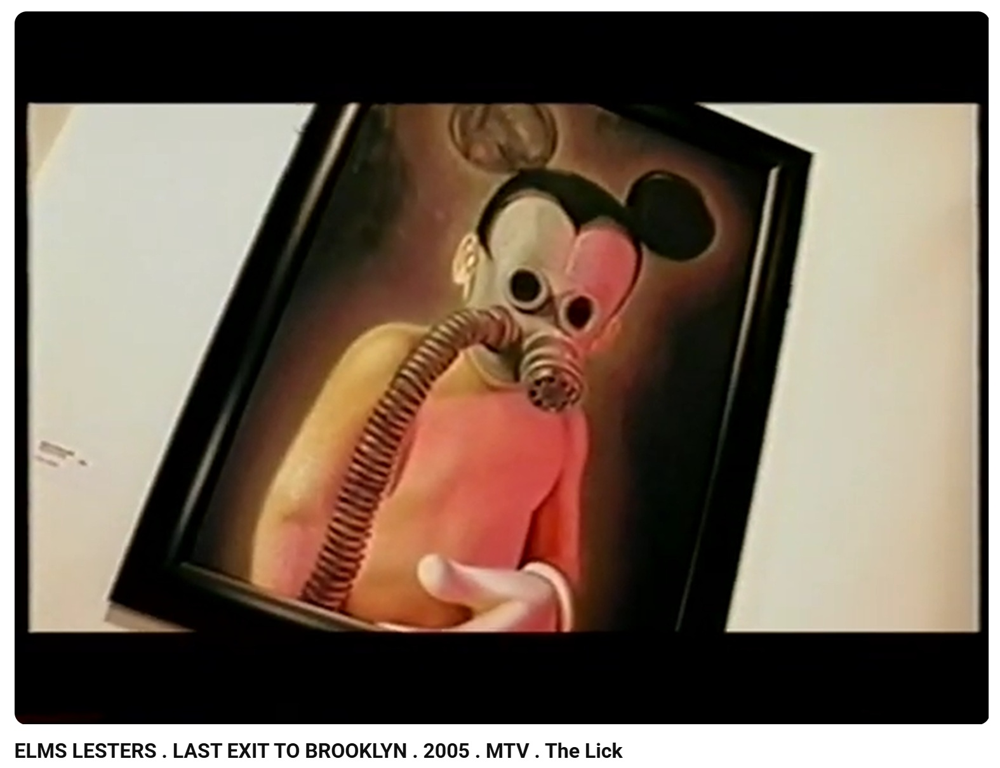

Exhibitions
Last Exit to Brooklyn: New York's Counter Culture, Elms Lesters Painting Rooms, London, UK, October 28–November 19, 2005.
Literature
Ron English, Abject Expressionism: The Art of Ron English (San Francisco: Last Gasp, 2007), p. 18. ISBN 978-0867196894.

Ron English, Son of Pop: Ron English Paints His Progeny (San Francisco, California: 9mm Books and The Shooting Gallery, 2007), p. 69. ISBN 978-0976632511.

Knight Ridder, “Who exactly owns pop culture images?”. The Post-Crescent, 2005, p. 9.

John Petrick, “Artists, companies clash over character rights”. The Bismarck Tribune, 2005, p. 17.

Lifelounge Magazine, “Ron English - Art terrorist”. Lifelounge Magazine - The Counterfeit Edition, 2007.

Provenance
Private collection.
Notes
This work appears at 0:57 in Elms Lesters Painting Rooms’ YouTube video Last Exit to Brooklyn: New York's Counter Culture.
Ancillary Documentation


